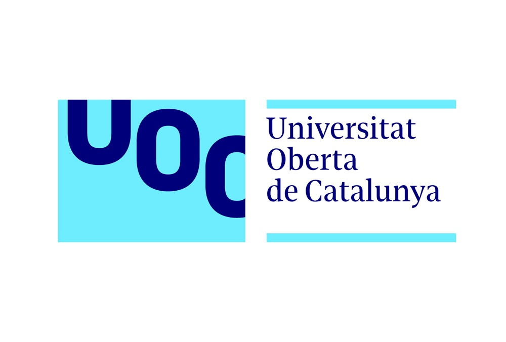

Soy Software Engineer especializado en automatización empresarial, flujos de trabajo de IA e integración de sistemas. Conecto lógica backend sólida con frontends dinámicos en entornos Agile internacionales.
Apasionado por el aprendizaje continuo, el código limpio y la resolución de desafíos complejos. Experiencia en arquitectura de flujos de IA multi-agente, mantenimiento de plataformas empresariales en Java y React, y creación de pipelines de despliegue CI/CD con Jenkins.
Actualmente cursando el Grado en Ingeniería Informática en la Universitat Oberta de Catalunya (UOC). Abierto a oportunidades en remoto o reubicación internacional en Europa (ciudadano de la UE con disponibilidad completa inmediata).

Arquitectura, diseño y desarrollo de flujos de trabajo de IA multi-agente, herramientas internas e integraciones de sistemas utilizando Python.

Desarrollo de componentes responsivos para una plataforma empresarial B2B, incluyendo scrolls paginados, calendarios personalizados y flujos de compra.

Desarrollo de módulos ERP y e-commerce utilizando React, TypeScript, Node.js y Docker, integrando servicios backend mediante APIs REST.

Formación rigurosa en ingeniería orientada a la interacción hardware-software, fundamentos matemáticos, sistemas digitales y diseño formal de arquitecturas de software.
Diseño de arquitecturas distribuidas resilientes, sistemas de componentes modulares, separación de responsabilidades y diseño guiado por el dominio (DDD).
Arquitectura de computadores, juegos de instrucciones (ISA), optimización de registros de CPU, jerarquía de memoria y ensamblador x86/ARM.
Automatización de flujos de trabajo críticos de negocio, creación de herramientas CLI internas e integración bidireccional entre sistemas heterogéneos.
Arquitectura de redes de agentes autónomos, pipelines de orquestación, integración de LLMs, tool calling y automatización operativa inteligente con Python.
Estructuración de pipelines automatizados de build, test y despliegue en Jenkins y Azure DevOps con contenedorización para entregas fiables.
Transformación de especificaciones de negocio en productos de software completos, conectando lógica backend sólida con frontends responsivos y reactivos.
Colaboración en equipos de ingeniería internacionales bajo metodologías Agile/Scrum con inglés profesional fluido y alemán conversacional.
Código limpio, autodocumentado y testeable con cobertura de pruebas automatizadas (unitarias, integración, Cypress E2E) y refactorización continua.
Lenguaje principal para flujos de IA multi-agente, automatización de procesos empresariales, herramientas internas e integración de servicios backend.
Desarrollo de plataformas empresariales (Java 8+), arquitectura robusta orientada a objetos, microservicios e integración de sistemas.
Desarrollo fuertemente tipado para aplicaciones full-stack escalables, patrones de código limpio y mantenibilidad empresarial.
Interfaces de usuario dinámicas para entornos empresariales, arquitectura de componentes modulares, gestión de estado y SPAs reactivas.
Programación de sistemas a bajo nivel, gestión manual de memoria, rendimiento algorítmico, estructuras de datos y computación cercana al hardware.
Microservicios empresariales, arquitectura de APIs RESTful, inyección de dependencias, Spring Security y ecosistemas backend seguros.
Diseño y consulta de bases de datos relacionales, optimización de consultas, modelado, indexación e integridad de datos en el backend.
Manipulación avanzada del DOM, estándares web modernos, interfaces responsivas y rendimiento optimizado sin dependencias innecesarias.
Creación y mantenimiento de pipelines de despliegue continuo en Jenkins, integración de pruebas automatizadas y orquestación de builds.
Despliegues en la nube, Azure Pipelines, Azure Repos, automatización de flujos CI/CD y gestión de servicios cloud.
Contenedorización para entornos reproducibles y portables. Dockerfiles multi-etapa, imágenes ligeras y despliegues cloud.
Control de versiones distribuido, estrategias avanzadas de ramas, pull requests, resolución de conflictos y flujos integrados con CI/CD.

Este repositorio contiene mi práctica de resolución de problemas en Codewars, enfocada en dominar JavaScript y Python.

Aplicación web desarrollada con Django y yt-dlp para descargar videos y música de varias plataformas como YouTube.

Este es un proyecto que consume la API Jikan para mostrar los animes por temporadas y noticias relacionadas en la página.

Aplicación de seguimiento de fitness con rutinas personalizadas, planificación, sistema de rachas e integración con Maps.

Juego interactivo multijugador donde dos jugadores compiten para ver quién reconoce más pokemon en el menor tiempo posible.
Lengua materna con fluidez completa y comprensión profunda de matices culturales.
Competencia profesional completa (Certificación Cambridge B2 First). Operación diaria en equipos internacionales de ingeniería Agile.
Competencia elemental. En aprendizaje continuo con experiencia de colaboración práctica en entornos internacionales.
Una recopilación de certificaciones verificadas que demuestran mi crecimiento profesional en ingeniería de software, cloud, backend y desarrollo.
Ver Certificados¿Te gustaría ponerte en contacto conmigo?
Puedes encontrarme en LinkedIn, GitHub o contactarme directamente a través de mi email.
No dudes en agregarme en LinkedIn, siempre estoy feliz de hacer nuevos contactos.